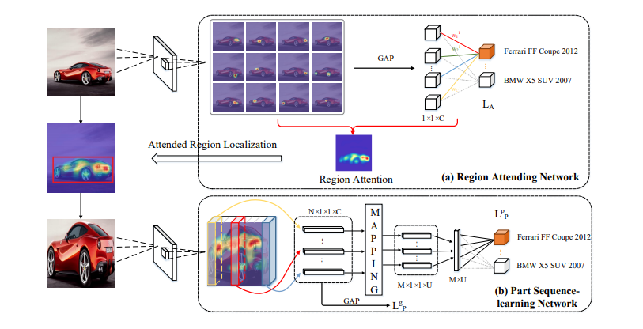
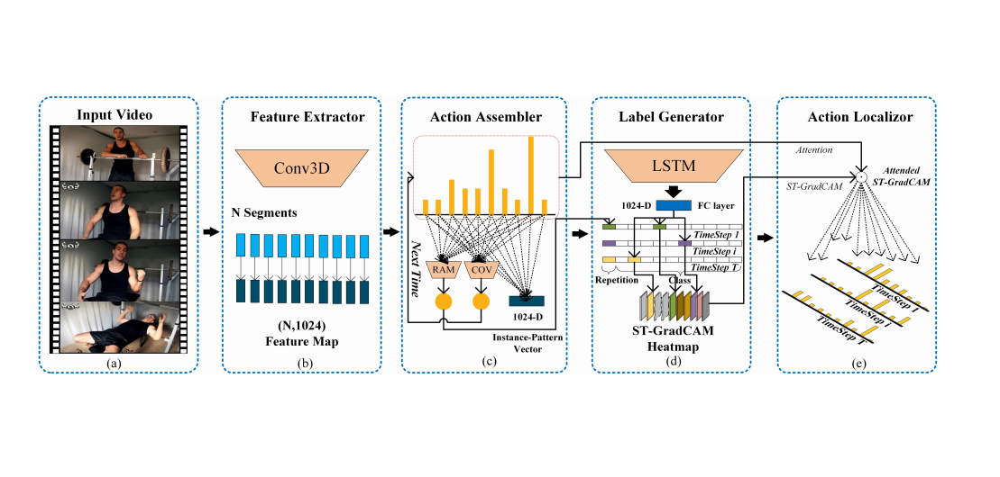
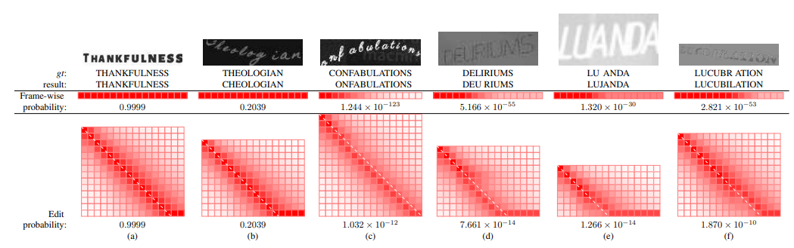
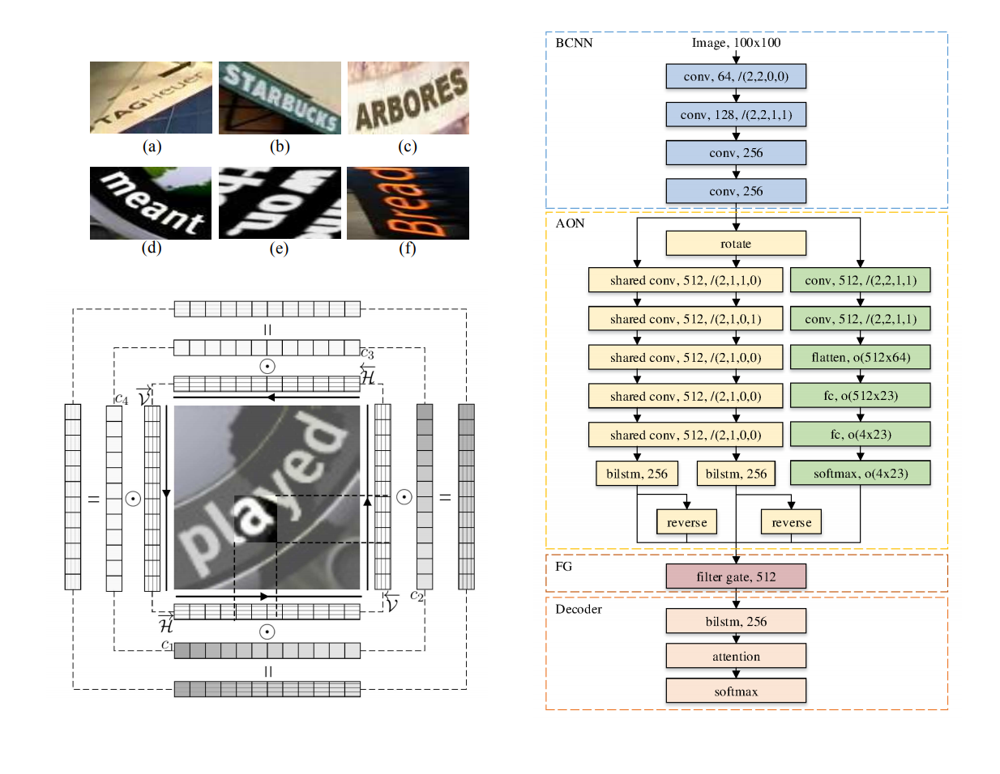

Conference Papers

SPIN: Structure-Preserving Inner Offset Network for Scene Text Recognition
Chengwei Zhang, Yunlu Xu, Zhanzhan Cheng, Shiliang Pu, Yi Niu, Fei Wu, Futai Zou
Accepted by
AAAI 2021
[Paper]

TRIE: End-to-End Text Reading and Information Extraction for
Document Understanding
Peng Zhang, Yunlu Xu, Zhanzhan Cheng, Shiliang Pu*, Jing Lu, Liang Qiao, Yi Niu, Fei Wu
Accepted by
ACMMM 2020
[Paper]

Text Perceptron: Towards End-to-End Arbitrary-Shaped Text Spotting
Liang Qiao, Sanli Tang, Zhanzhan Cheng*, Yunlu Xu, Yi Niu, Shiliang Pu, Fei Wu
Accepted by
AAAI 2020
[Paper] [Code(will be released)] [Supplementary] [Poster] [Video(will be released)]

REAPS: Towards Better Recognition of Fine-grained Images by Region Attending and Part Sequencing
Peng Zhang, Xinyu Zhu, Zhanzhan Cheng, Shuigeng Zhou, Yi Niu
Accepted by
PRCV 2019
[Paper]

You Only Recognize Once: Towards Fast Video Text Spotting
Zhanzhan Cheng, Jing Lu, Yi Niu, Shiliang Pu, Fei Wu*, Shuigeng Zhou
Accepted by
ACMMM 2019
[Paper] [Dataset]
Adversarial Seeded Sequence Growing for Weakly-Supervised Temporal Action Localization
Chengwei Zhang, Yunlu Xu, Zhanzhan Cheng*, Yi Niu, Shiliang Pu, Fei Wu, Futai Zou
Accepted by
ACMMM 2019
[Paper]

Segregated Temporal Assembly Recurrent Networks for Weakly Supervised Multiple Action Detection
Yunlu Xu, Chengwei Zhang, Zhanzhan Cheng, Jianwen Xie, Yi Niu, Shiliang Pu, Fei Wu
Accepted by
AAAI 2019
[Paper]

Edit Probability for Scene Text Recognition
Fan Bai, Zhanzhan Cheng, Yi Niu, Shiliang Pu, Shuigeng Zhou*
Accepted by
CVPR 2018
[Paper]

AON: Towards Arbitrarily-Oriented Text Recognition
Zhanzhan Cheng, Yangliu Xu, Fan Bai, Yi Niu, Shiliang Pu, Shuigeng Zhou*
Accepted by
CVPR 2018
[Paper]

Focusing Attention: Towards Accurate Text Recognition in Natural Images
Zhanzhan Cheng, Fan Bai, Yunlu Xu, Gang Zheng, Shiliang Pu, Shuigeng Zhou*
Accepted by
ICCV 2017
[Paper]